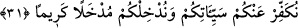

MALI VE CANI MUHÂFAZA
29- Ey îmân edenler! Aranızda karşılıklı rızâya dayanan ticâret olması hali
müstesnâ, mallarınızı, bâtıl (haksız ve haram yollar) ile aranızda (alıp vererek)
yemeyin. Ve kendinizi öldürmeyin. Şüphesiz Allah size karşı çok merhametlidir.
30- Kim düşmanlık ve zulüm ile bunu (haram yemeyi veya öldürmeyi) yaparsa
(bilsin ki) onu ateşe sokacağız; bu ise Allah’a çok kolaydır.
31- Eğer yasaklandığınız büyük günahlardan kaçınırsanız sizin küçük
günahlarınızı örteriz ve sizi şerefli bir yere sokarız.
“Ey îmân edenler! Aranızda karşılıklı rızâya dayanan ticâret olması hâli
müstesnâ,” Yâni, ticâretin karşılıklı rızâya dayanması veyâ malların ticâret malı olması
hâli müstesnâ demektir. Hibe, sadaka, mîras ve câiz akidler gibi meşrû mülk edinme
yolları da batıla girmedikleri için sözkonusu ticaret gibidirler. Kazancın en çok vukû
bulanı ve mürüvvet sahiplerine en çok yaraşanı olduğu için ticâret husûsî olarak
zikredilmiştir. Buradaki karşılıklı rızâdan maksad Hanefîlere göre alan ve satanın alış-
veriş hâlinde, îcâb ve kabûl sırasında akid yaptıkları konuda râzılaşmalarıdır. İmam
Şâfiî’ye göre ise bundan maksat, akid meclisinden ayrıldıkları esnâda karşılıklı râzı
olmalarıdır.
“Mallarınızı bâtıl (bir sebep) ile aranızda” gasp, hırsızlık, hiyânet, kumar, fâiz
akidleri, rüşvet, yalan yere yemin, yalancı şahitlik, fâsid akidler vb. gayr-i meşrû
yollarla “yemeyin”; yâni almayın. Almaktan, yemek diye bahsedilmiştir. Çünkü mal
edinmenin en büyük gâyesi, yemektir. Bâtıl olarak malı yemek haram kılındığı gibi mal
üzerinde başka şekillerde tasarrufta bulunmak da haram kılınmıştır.
“Nefislerinizi de” câhil Hindlilerin yaptıkları gibi kızgınlık ve üzüntü sebebiyle ya
da kendinizi helâke atarak “öldürmeyin.” Bu mânâyı Amr b. Âs (r.a.)’ın bu âyeti çok
şiddetli soğukta cünüp olduğu için yıkanmayıp teyemmüm yapmaya yorması ve Hz.
Peygamber (s.a.v.)’in bunu kötü görmemesi ile ilgili rivâyet[2] de desteklemektedir.
Yâhut dünyâ ve âhirette helâke götürecek ma’siyetleri işleyerek nefsinizi öldürmeyin.
Yâhut nefsi alçaltıp zelîl ve bayağı kılan suçları işleyerek öldürmeyin. Çünkü bu,
nefsi hakîkaten öldürmek demektir.